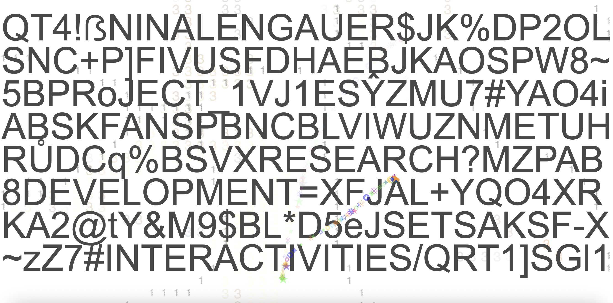
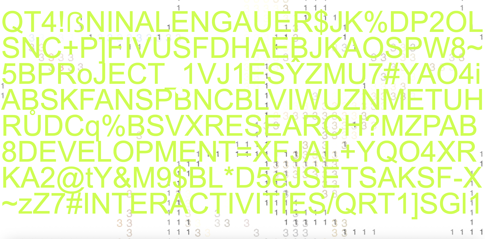
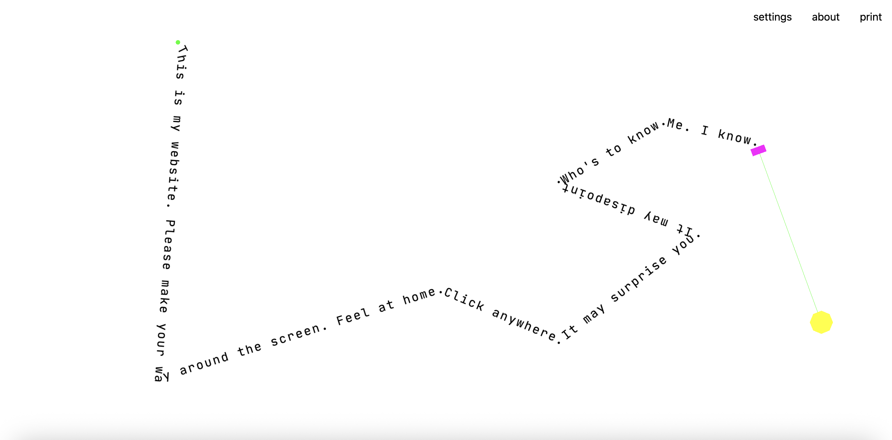
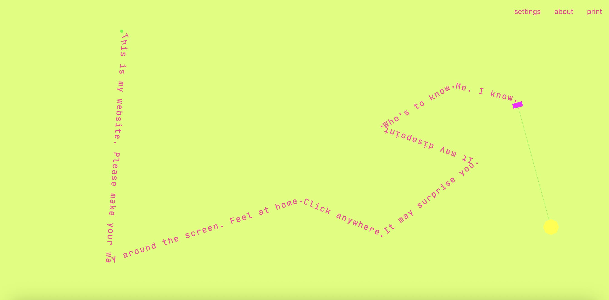
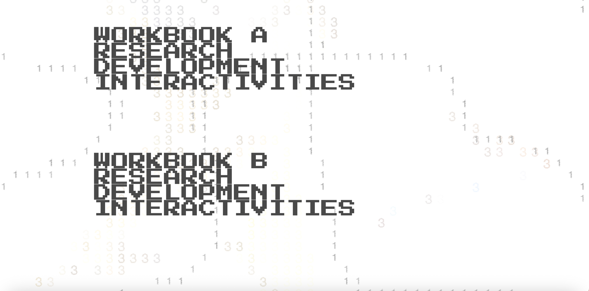
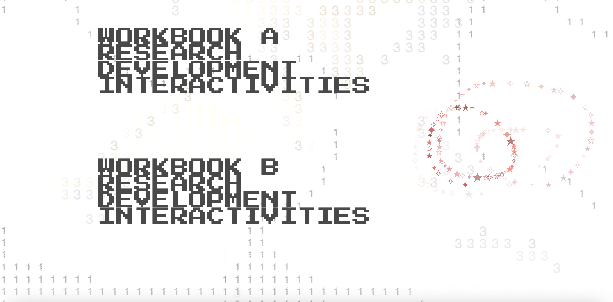
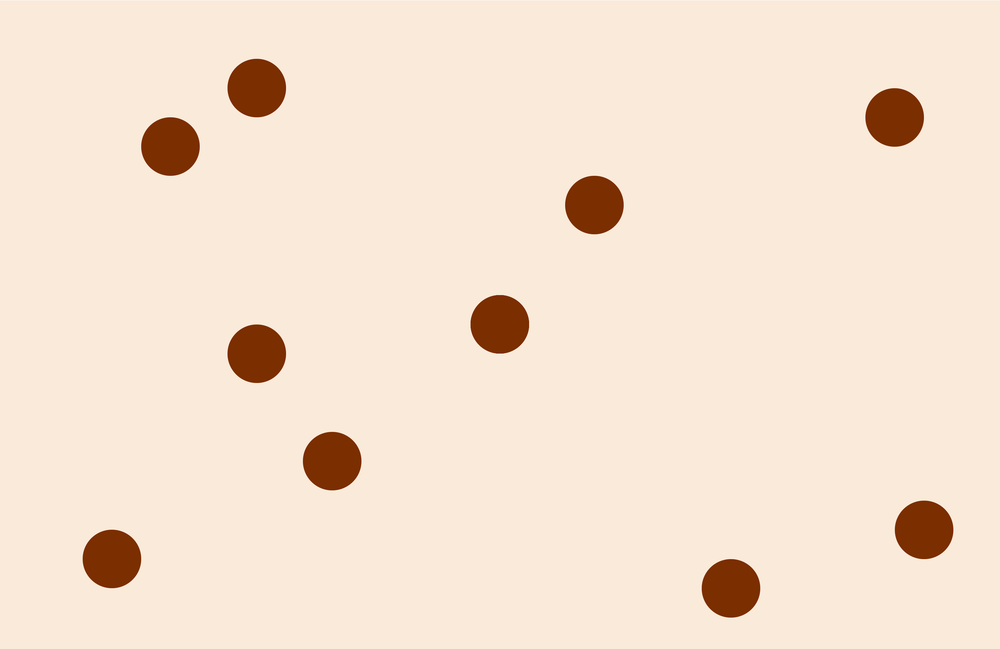

I knew I wanted to make the landing page different to the one in Workbook A, to try and display my more intricate knowledge of VSCode.
I wanted to make it more minimal and maybe less playful, not quite serious but a step away from the colourful, fun vibe in the original.
So I tried just making the background white, or one solid colour. (forgot to take screenshot before moving on hence why background GIF included here).

Then I tried playing with text colour, and for whatever reason I chose some of the most illegible colours so that obviously didn't stick.

Then I tried playing with text on websites such as type.constraint.systems to see if I could use something like this for the homepage options.

Here is another version of this (again with the very illegible colour) and I liked the approach, but I thought it didn't quite suit the context of the home page. So I abandoned this idea.
The next step then became to explore ideas of movement and background animations and move away from the text, to see if I could come up with something new through this different route.
In my spare time I started exploring ASCII animation through websites that make it for myself such as grainrad.com which had the webcam attached so I could make videos of myself in the ASCII format.
I thought this video of me waving could be a fun addition to the homepage, however decided against it as it was not really my work, and I did not want my face anywhere - even if in glyphs and digits.
I then attempted my own take on ASCII animation in Adobe After Effects, which for whatever reason was quite complicated. Thus when I developed this one GIF, I thought I should use it for something after spending two hours on it.
This gif is a simple rotating star which uses numbers to determine shadows and light, and I really enjoyed the digital and analogue vibe it gives off on the landing page behind my text.

I then removed the black background and turned it into a GIF. I put it on the landing page and I enjoy that the animation used was created by me too.
A good way to use my random side projects for uni assignments.

My next step was to find the right font and styling for my landing page. So I just went onto Google Fonts to find one I liked and landed on 'Press Start 2P' which I thought suited the pixelated, explicit digital vibe of this assignment.

I wanted to keep the cursor in the same vein as the original landing page, however making the glyphs all shades of red made it seem more focused and less totally playful.

Rather than solid colour, I wanted to create my own backgrounds to each of the pages, so I created simple Photoshop images with different colours so create a continuous backgrounds throughout and made entirely by me.